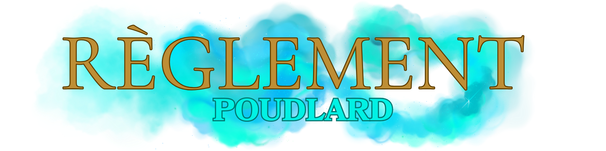

Accueil
Régles Discord Discord
Lore du Serveur Respect du Lore
Règles Générales RP Règles /me Règlement Poudlard
Le Jeu de Role Lexique RP
Magies, Sorts et Dons Règles Sorts Et Comas Groupes Et Interactions
Règlement Streamers
Régles Discord Discord
Lore du Serveur Respect du Lore
Règles Générales RP Règles /me Règlement Poudlard
Le Jeu de Role Lexique RP
Magies, Sorts et Dons Règles Sorts Et Comas Groupes Et Interactions
Règlement Streamers

1. Règles générales de conduite
- Le respect envers les professeurs, le personnel, les préfets et les autres élèves est obligatoire.
- Toute forme de violence physique ou magique contre un élève ou un membre du personnel sera sanctionnée.
- Les élèves doivent porter l’uniforme scolaire réglementaire lors des cours et des repas dans la Grande Salle.
- Les propos ou actes discriminatoires envers le sang, l’origine ou les créatures magiques seront sanctionnés.
2. Déplacements et lieux interdits
- Toute sortie après le couvre-feu est interdite, sauf autorisation spéciale.
- Les zones suivantes sont interdites aux élèves sauf autorisation d’un professeur :
- - La Forêt interdite (réservée aux professeurs, aux gardiens et aux cours encadrés).
- - Les cuisines, sauf permission expresse.
- - Les couloirs et salles condamnés ou marqués « Interdit ».
- - La Réserve de la Bibliothèque, accessible uniquement avec un mot signé d’un professeur.
- - Toute salle de classe ou cachot non utilisé par le programme scolaire.
3. Utilisation de la magie
- L’usage de la magie est permis uniquement :
- Les sortilèges dangereux, même simples (incendio, expelliarmus, etc.) ne doivent pas être utilisés contre d’autres élèves sans encadrement.
- - en cours, sous la supervision d’un professeur ;
- - dans les salles communes pour des exercices autorisés ;
- - dans des activités scolaires encadrées (clubs, tournois, devoirs).
4. Objets magiques et interdictions
- Les objets dangereux sont interdits à l’intérieur de l’école.
- La liste officielle des objets interdits, régulièrement mise à jour, comprend plusieurs centaines d’articles (feux d’artifice, poudres à fumer, farces dangereuses, etc.).
- Les balais volants sont autorisés uniquement sur le terrain de Quidditch ou lors des cours de Vol.
5. Vie dans l’école
- Les repas se prennent dans la Grande Salle.
- Les animaux de compagnie autorisés sont limités à un hibou, un chat, un rat ou un crapaud.
- Les élèves doivent garder leur salle commune secrète et ne jamais divulguer le mot de passe à un élève d’une autre maison.
6. Discipline et sanctions
- Les préfets et les professeurs peuvent retirer ou ajouter des points de maison selon le comportement des élèves.
- Les fautes graves sont sanctionnées par des retenues. Les retenues peuvent inclure :
- Les manquements très graves (utilisation de la magie noire, agression, complot) entraînent une comparution devant le Directeur et peuvent mener à l’expulsion.
- - Nettoyage des locaux sans magie;
- - Tâches sous la supervision des surveillants.
7. Tournois et activités
- Le Quidditch est strictement réglementé : seuls les membres officiels des équipes ont accès au terrain hors cours.
- Les clubs et activités (ex. : Club de duel, Chorale, S.A.L.E., etc.) nécessitent l’approbation d’un professeur.
8. Cas particuliers
- Les élèves doivent obéir aux instructions données par le Directeur ou les Directeurs adjoints, qui peuvent modifier temporairement les règles pour des raisons de sécurité.
- En cas de danger exceptionnel (attaques de créatures, menaces extérieures, instabilité magique), les directives du personnel prévalent sur le règlement.
- Le Transplanage est interdit dans l’enceinte de l'école, seul les elfes ont autorisation pour le bon déroulement de leur travail.